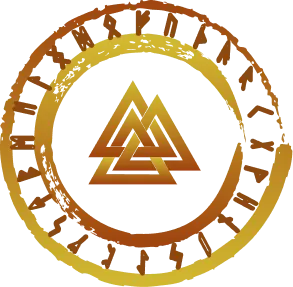

— I —
Клуб рунічної практики
Закритий простір, де руни вивчають послідовно: від значень і ставів до власних ритуалів. Зустрічі, практики, завдання та чат зі мною.

Рунолог із практикою понад два роки. Пройшов навчання в рунічному ордені, у традиції, якій понад сто років. Працюю з класичними рунічними ритуалами на силі стихій, розкладами та програмними свічками — і даю людям лише те, що перевірив на собі.
Мене звати Герман. Понад два роки я практикую рунічну магію північної традиції. Навчався в рунічному ордені, традиції якого понад сто років, — без «швидких курсів» і вигаданих символів.
Працюю з класичними рунічними ритуалами на силі стихій, роблю розклади та програмні свічки. Кожну практику, яку пропоную людям, спершу пройшов сам. Якщо щось не працює — я про це скажу чесно.
«Руна не виконує бажання. Вона дає напрямок і силу — а йти тобі.»Детальніше про мене →
Клуб, курси, розклади й ритуали — оберіть те, що відгукується.
Закритий простір, де руни вивчають послідовно: від значень і ставів до власних ритуалів. Зустрічі, практики, завдання та чат зі мною.
Основи північної традиції: футарк, робота з рунами в житті, безпечні правила практики. Уроки в записі та домашні завдання.
Розбір ситуації на рунах: що відбувається, що впливає і куди рухатися. Чесна відповідь без залякування.
Класичні рунічні ритуали з опорою на стихії — на захист, очищення, гроші та стосунки. Кожен я провів спершу на собі.
Свічки, заряджені рунічною програмою під конкретну мету. Пояснюю, як із ними працювати, щоб був результат.
Відверті розмови про руни, магію та північну традицію: історія, практика, відповіді на ваші питання.